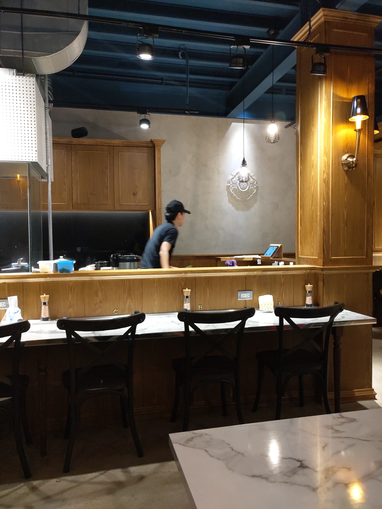
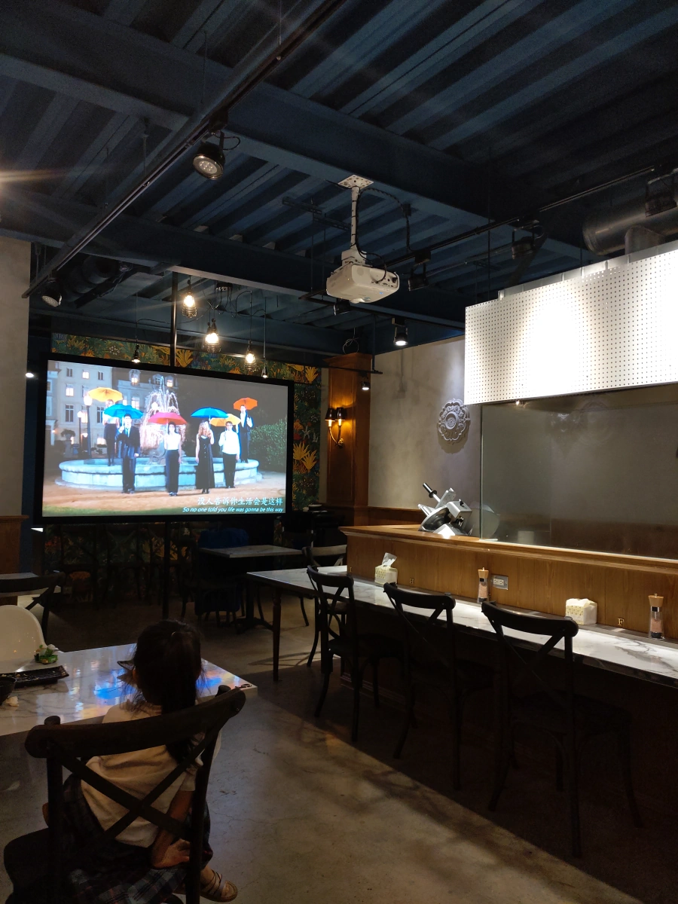
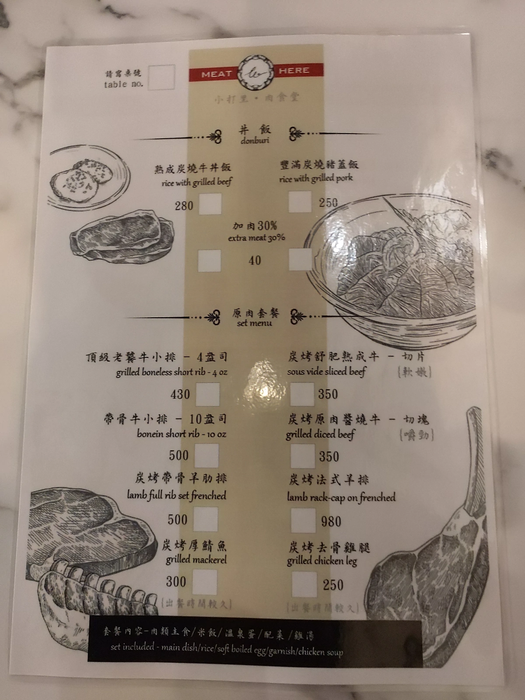
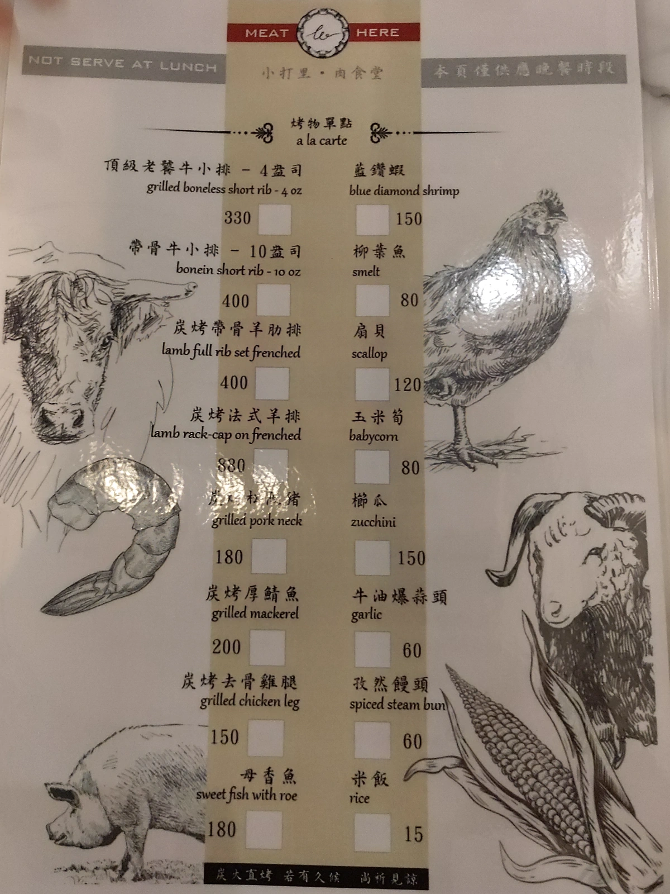
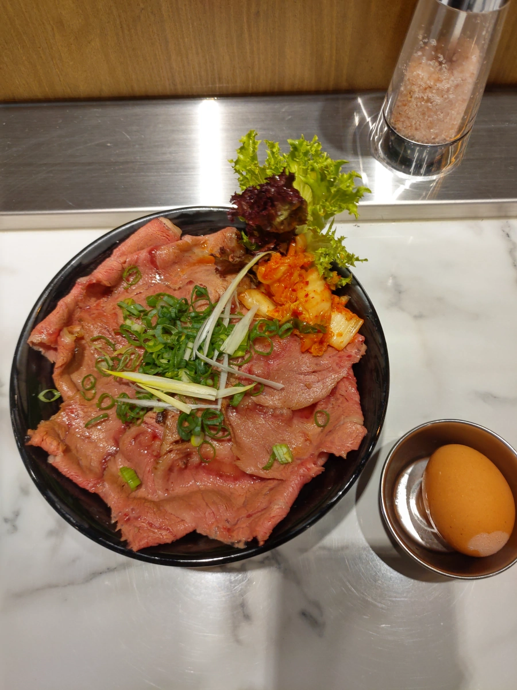
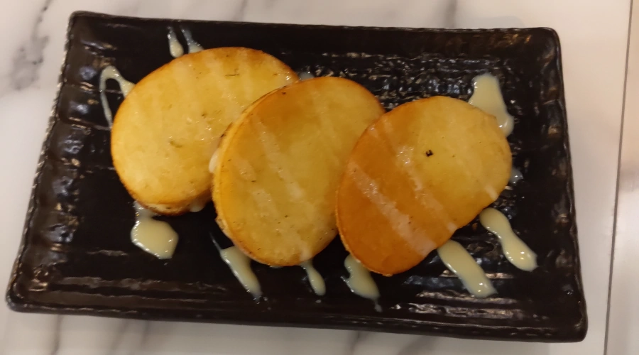
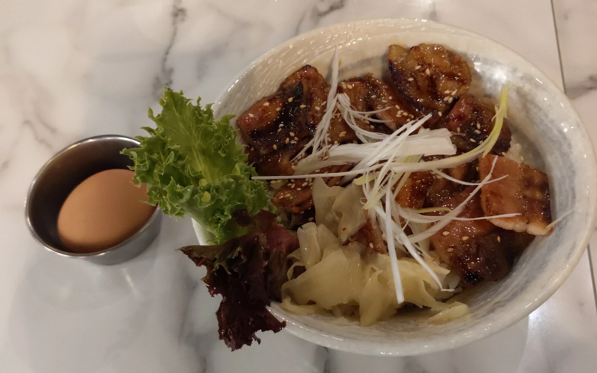
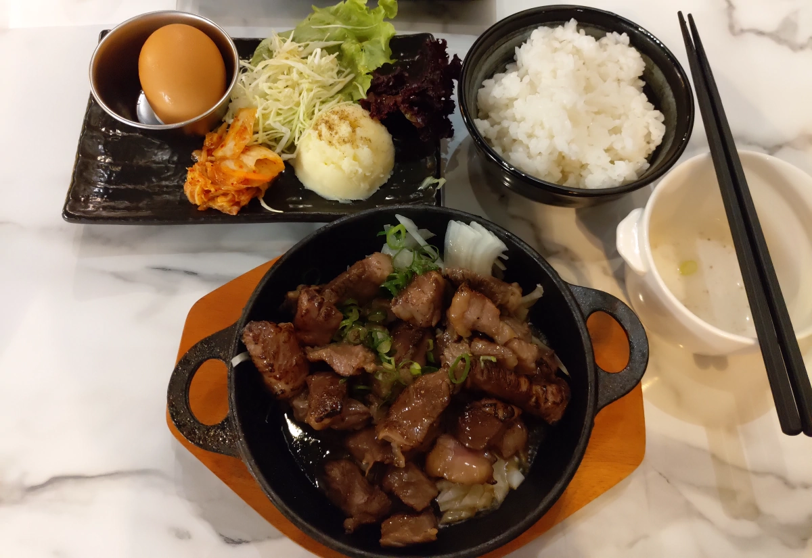

[竹北] 小打里
| 餐廳名稱: | 小打里 |
|---|---|
| 地 址: | 新竹縣竹北市成功二街37號 |
| 營業時間: | 週二 ~ 週日 11:30 – 14:00 17:00–22:00 |
| 週一 公休 | |
| 電 話: | 03 657 7045 |
小舍河粉一陣子沒拜訪了，沒想到它事業蒸蒸日上，隔壁餐廳收了，它就租下，賣某種日式燒肉 - 小打里。 也蠻好笑的，小舍河粉是越南菜，小打里的英文名字Bali 是峇里島的意思，算印尼。可是賣的是日式燒肉， 是要牽扯多少國家才甘願啊，哈哈。
拜訪小打里的這一天，自然地經過小舍河粉，當時晚上七點多，小舍河粉大客滿。這一帶生意不好做耶，本來 這排建築的背面，成功一街，有個私人停車場，後來突然就蓋起房子來了，這一區幾乎沒停車位了， 只有附近小公園周圍有幾個車位，根本停不到。所以小舍河粉還能客滿，蠻難得的。
小打里目前座位排的還算寬敞，也許單價高一點，又是新開的，沒客滿，不過到我們吃完，也坐八成滿了。 還有一組客人很好笑，問能不能點小舍河粉，不知道她跟店長達成什麼協議，就到隔壁帶一些小舍河粉的 一大碗越南河粉加上一些別的來給夥伴吃。 下圖就是店長在廚房區忙碌地走來走去，店長還蠻機靈的，會注意客人等候時間，喜歡跟客人哈拉。 
餐廳最裡面設置一台投影電視，用餐當天播放 “六人行 Friends”，有點懷舊。
有個玻璃門的冰箱，客人可自行拿飲料，結帳時再算。 如果要開水，要去櫃檯那邊拿，不在餐具櫃附近。 工作人員不多，客人離開，桌子也很久才收。 
菜單正面都是套餐。店長宣稱牛肉、羊肉是它們的特色。 
菜單背面則是單點。 
三個套餐都有一碗雞湯，已經先上了，味道的風格跟新橋燒肉的雞湯很像， 可是怎麼不學 新橋 一樣每桌都有一瓶保溫瓶的雞湯呢，因為雞湯最先上，一下子就喝完了， 想問能不能續，可是店長超忙。三個套餐也都有一顆溫泉蛋，韓式泡菜，一點生菜。
下圖是 熟成炭燒牛丼飯，炭燒牛軟嫩，味道不錯，小朋友覺得牛肉很鹹，我這種重口味的，是覺得不會鹹且蠻好吃的。 也許店家是規劃 炭燒牛 要跟 溫泉蛋 拌在一起吧? 這樣就會降低一些鹹度。 
烤饅頭切片，沾煉乳。店長覺得我們等太久了，先送一點烤饅頭。烤的食物，通常都慢，早有心理準備。 看了一下週圍，似乎還有一、兩桌也有送。 
豐滿碳燒豬蓋飯，一樣有雞湯、溫泉蛋，生菜。但是韓式泡菜變成薑片了。 豬肉片烤的不錯，調味佳，有焦香的香氣。 
炭烤原肉醬燒牛 - 切塊，套餐，有點嚼勁。除了雞湯、溫泉蛋，韓式泡菜，生菜。還多了馬鈴薯泥。 牛肉塊沾滿醬汁，醬汁略酸甜。店長有說這道菜適合小朋友。但是我們家的小朋友不喜歡酸的部分， 我則是不喜歡甜的部分，台南人應該就愛了，哈，可惜我不是。 
三種套餐基本上都算好吃啦，店長得意洋洋地說他們的舒肥(Sous Vide, 法文)多厲害。可是我早就被滴口水的吃吃喝喝 Jeff 影響了，根本就不覺得舒肥有什麼好的，只好敷衍地笑笑。 舒肥就是把食物用真空袋封起來，丟進舒肥機，真空低溫烹調把食物弄熟，食物被這樣處理，通常是軟嫩多汁。 舒肥機 工讀生都會操作，完全不用廚藝，當然對餐廳老闆很好。可是 直火烹調，才有可能發揮最多食物的味道，但需要廚藝。
不過先舒肥，再炭火上色、上香氣 算是一個不錯得折衷方案，還能接受啦。不接受的話，單價會衝破天際吧。感覺熟成炭燒牛丼飯 沒炭香，應該是純舒肥吧，所以弄鹹一點掩蓋。豐滿碳燒豬蓋飯有可能是直接炭火烤。炭烤原肉醬燒牛也許是折衷方案，不過都被醬汁覆蓋了， 很難分辨。其實，小打里的菜單乾脆註明哪幾道菜是舒肥，讓客人自己選嘛，畢竟有人迷舒肥，有人不迷舒肥啊。 整體而言，小打里的用餐經驗還蠻舒適的，有緣會再訪。